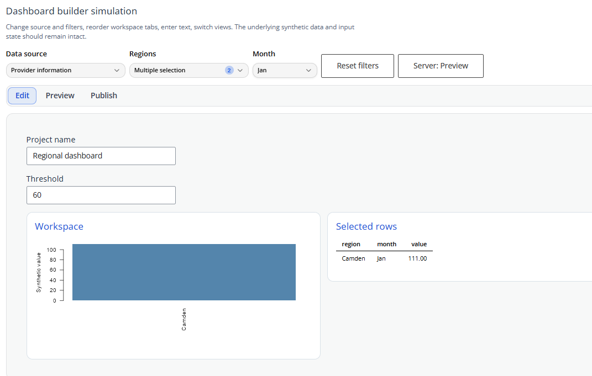
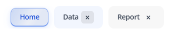
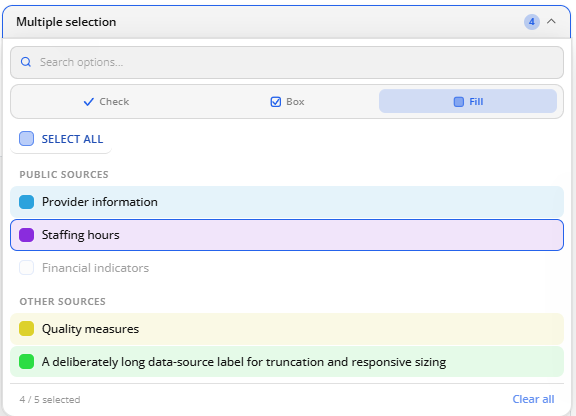
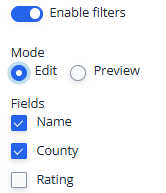
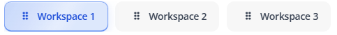
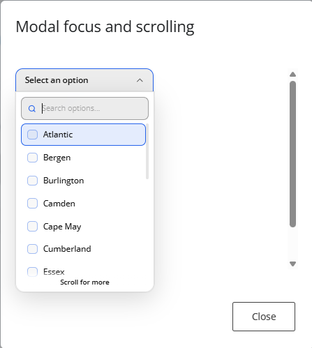
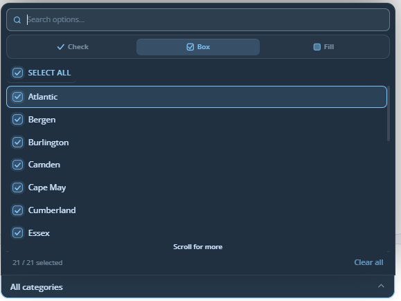
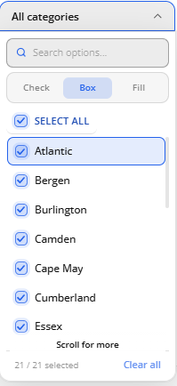

Modern navigation and inputs for R Shiny.
glasstabs provides animated tab navigation, searchable filters, and glass-styled form controls for Shiny. Build responsive dashboards, interactive workspaces, and data-driven applications without writing custom JavaScript or CSS for the controls.
Use the components individually or together in existing fluidPage(), bslib, and bs4Dash applications. Choose light or dark surfaces, automatic theming, compact layouts, or a custom appearance.
Version note: This README describes the 0.4.2 development version. Persistent ordering, closable tabs, touch reorder handles, and the new form inputs require 0.4.2. The CRAN release may lag behind GitHub. See What’s new in 0.4.2.

Documentation · Live demo · Component gallery · Changelog
Components
| Navigation | Selects | Form inputs |
|---|---|---|
 |
 |
 |
| Responsive, configurable tab navigation. | Searchable single and multi-select filters. | Native-bound switches, radio groups, and checkboxes. |
Installation
Install the CRAN release:
install.packages("glasstabs")To try the current development version from GitHub:
# Requires the pak package
pak::pak("PrigasG/glasstabs@main")
packageVersion("glasstabs")The GitHub installation replaces the installed package in the target R library. For production deployments, use a tested release or pin the GitHub commit used for verification.
Quick start
Call useGlassTabs() once at the UI root. The following complete app combines two tabs, a multi-select filter, selected-value tags, and a reactive active-tab readout. It uses the established API and does not require the new 0.4.2 workspace features.
library(shiny)
library(glasstabs)
choices <- c(Apple = "apple", Banana = "banana", Cherry = "cherry")
ui <- fluidPage(
useGlassTabs(),
glassTabsUI(
"main",
glassTabPanel(
"overview", "Overview", selected = TRUE,
h3("Fruit summary"),
glassFilterTags("fruit")
),
glassTabPanel(
"details", "Details",
h3("Selection details"),
verbatimTextOutput("selection")
),
extra_ui = glassMultiSelect(
"fruit",
choices,
width = "240px",
show_style_switcher = FALSE
)
),
verbatimTextOutput("active_tab")
)
server <- function(input, output, session) {
active_tab <- glassTabsServer("main")
output$active_tab <- renderPrint(active_tab())
output$selection <- renderPrint(input$fruit)
}
if (interactive()) shinyApp(ui, server)glassMultiSelect() selects every enabled choice by default. To start with no selections, set selected = character(0).
See the Getting started guide for more examples.


Feature highlights
Navigation and workspaces
Choose floating, attached, or segmented navigation, with glass, solid, or underline indicators. Use horizontal or vertical layouts, compact spacing, numeric badges, and configurable overflow. Tab helpers support server-driven selection, showing and hiding, enabling and disabling, and runtime insertion and removal.

With 0.4.2, opt into desktop and keyboard reordering, touch handles, and browser-persisted order. A closable tab sends a request to the server, giving the application control over whether the pane is removed.
# UI (0.4.2)
glassTabsUI(
"workspace",
glassTabPanel("home", "Home", p("Pinned")),
glassTabPanel("report", "Report", textInput("notes", "Notes"),
closable = TRUE),
style = "segmented",
indicator = "solid",
transition = "none",
theme = "auto",
glass_strength = 0.25,
reorderable = TRUE,
touch_reorder = TRUE,
persist_order = "session"
)
# Inside server: approve closure only when appropriate for the application.
observeEvent(input[["workspace-close_request"]], {
value <- input[["workspace-close_request"]]
if (identical(value, "report")) {
removeGlassTab(session, "workspace", value)
}
})Read the active tab using input[["workspace-active_tab"]] and the order using input[["workspace-tab_order"]]. Browser persistence stores tab identifiers, not pane contents or account-specific state. Use initial_order with application-managed storage for authenticated, cross-device preferences. Closure does not persist tab deletion across fresh server sessions.
Searchable filters
Both select widgets support search, disabled and grouped choices, programmatic updates, and configurable dropdown presentation.
glassSelect(
"region",
c(North = "north", South = "south", East = "east", West = "west"),
label = "Region",
clearable = TRUE,
width = "240px"
)
glassMultiSelect(
"status",
c(Open = "open", Review = "review", Closed = "closed"),
label = "Status",
selected = c("open", "review"),
width = "100%"
)The single-select returns one character value or NULL when cleared. An empty-string choice is a distinct selection. The multi-select returns the selected choice values; use glassFilterTags("status") to display selection tags.
For large choice sets, use server = TRUE with glassSelectServer() or glassMultiSelectServer(). The constructor’s server_limit bounds the initial choice slice, while the helper’s limit bounds search results. Explicitly selected values may be rendered in addition to the initial slice. Results are bounded, not paginated.

Native-bound form inputs
Available in 0.4.2, the form components use standard Shiny input bindings. They can be read and updated using familiar Shiny server code.
glassSwitch("enabled", "Enable filtering", value = TRUE)
glassRadioGroup(
"mode", "Mode",
choices = c(Edit = "edit", Preview = "preview"),
inline = TRUE
)
glassCheckboxGroup(
"fields", "Fields",
choices = c(Name = "name", County = "county", Rating = "rating"),
selected = c("name", "county"),
inline = TRUE
)| Input | Shiny update function |
|---|---|
glassSwitch() |
updateCheckboxInput() |
glassRadioGroup() |
updateRadioButtons() |
glassCheckboxGroup() |
updateCheckboxGroupInput() |
Match the surrounding app
Use theme = "auto" to follow Bootstrap color modes, or choose a fixed light or dark theme. Set shape = "square" on tabs and selects to complement square native controls. In 0.4.2, glass_strength adjusts decorative glass intensity, and size adjusts input density.
# 0.4.2 appearance options
glassSelect(
"dataset", c(Providers = "providers", Population = "population"),
label = "Dataset",
theme = "auto",
shape = "square",
width = "240px",
size = "sm",
glass_strength = 0.25
)For more control, use glass_tab_theme() and glass_select_theme(). A custom dark_selector can connect the widgets to an application’s own dark-mode signal.

Responsive layouts and accessibility
Tabs support keyboard navigation, responsive overflow, and reduced-motion preferences. Horizontal tab strips can scroll, wrap across rows, or collapse into a compact menu. Vertical navigation uses a rail. Optional pane swipe gestures and 0.4.2 reorder handles support touch interaction. Selects adapt their panels to the available space and support keyboard navigation and long labels.

Dropdown too narrow? Set width
Both select widgets retain a compact 160px default. Use explicit CSS lengths or a percentage to match the surrounding layout.
width |
Use |
|---|---|
NULL (default) |
Compact 160px control. |
"130px" |
Narrow toolbar field. |
"260px" |
More room for longer labels. |
"100%" |
Fill the parent card, column, or sidebar. |
A percentage fills the parent container, not the screen. Explicit widths are capped by the available container space. In 0.4.2, dropdown_max_height can limit the scrollable option area; short lists use only the space they need.
Shiny integration
Read values with ordinary Shiny inputs, use reactive helpers where useful, and update components from the server.
| Input | Meaning |
|---|---|
input[["main-active_tab"]] |
Active tab value, or NULL when no tab is active (0.4.2). |
input[["main-tab_order"]] |
Ordered tab values when reordering is enabled (0.4.2). |
input[["main-close_request"]] |
Server-controlled close request (0.4.2). |
input$region |
Single selected value, or NULL. |
input$status |
Multi-select choice values. |
input$status_open |
Whether the select dropdown is open. |
input$enabled, input$mode, input$fields
|
Standard Shiny switch, radio, and checkbox values (0.4.2). |
Use updateGlassTabsUI(), updateGlassTabBadge(), updateGlassSelect(), and updateGlassMultiSelect() to coordinate navigation and filters. For linked filters, notify = "changed" synchronizes each updated widget whose effective value changes. See the linked filters guide for coordinated updates.
glassPage() is an experimental fillable page wrapper for bslib. It loads the glasstabs dependency automatically, so do not add a second useGlassTabs() call when using it.
Try the examples
Example apps ship with the package. List the examples available in your installed version or launch a specific app from an interactive R session:
library(glasstabs)
runGlassExample()
runGlassExample("dashboard")| Explore | Built-in examples |
|---|---|
| Start with the fundamentals |
basic, dashboard
|
| Modern navigation and form inputs (0.4.2) |
modernization, final-features
|
| Themes and indicator styles |
indicators, light-mode, theme-switcher, square-corners
|
| Integrate into existing apps |
bslib, bs4dash, native-comparison
|
| Search large datasets | server-select |
| Publish a workflow | connect-workflow |
| Explore behavior and performance |
smoke-test, stress-test
|
The stress test is a diagnostic example, not an application starter.
Documentation and support
Visit the glasstabs documentation website for complete function signatures, examples, and implementation guidance.
| Guide | Topics |
|---|---|
| Getting started | Setup and first application |
| Component gallery | Available controls and sample code |
| Cheatsheet | Quick reference |
| Tabs and indicators | Layouts, transitions, and workspace management |
| Single-select and multi-select | Selection behavior, search, and updates |
| Modules and linked filters | Reusable and reactive application patterns |
| Migration and troubleshooting | Moving from native inputs and resolving common problems |
| Posit Connect | Deployment and verification |
| What’s new in 0.4.2 | Release highlights |
For the complete API, browse the function reference.
Release notes are maintained in NEWS.md, on the changelog, and through glasstabs_news() in R.
Report bugs or request improvements through GitHub Issues. When reporting an issue, include the package version, host layout, browser, and a minimal reproducible Shiny example if possible.
License
MIT. See LICENSE.